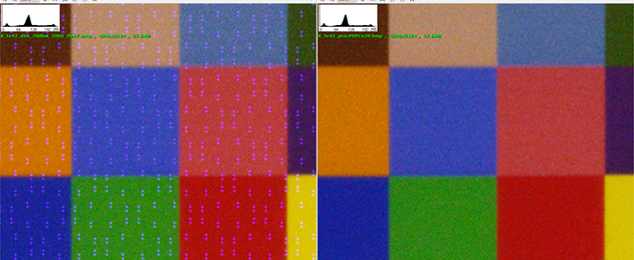
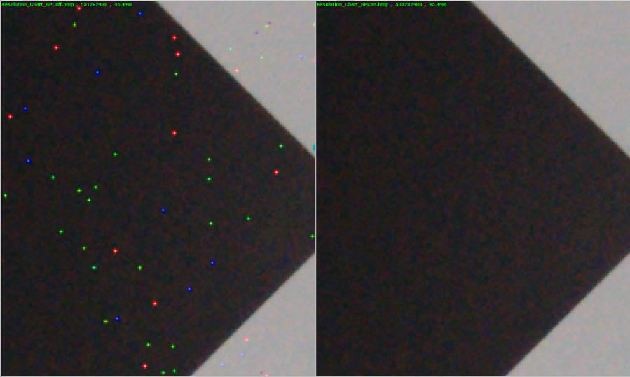
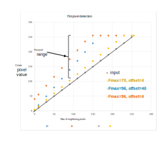
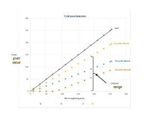

The PDPC module includes processing for both phase detection pixel correction
(PDPC) and dynamic single bad pixel correction (DSBPC). PD pixel correction and DSBPC
may be enabled separately in the PDPC module, if appropriate. Use the table below to
determine the pixel correction processes to tune for your project.
Table : IFE pixel correction processes matrix
| |
PD pixel sensor |
Non-PD pixel sensor |
| No
zzHDR |
Non PD pixel |
Not applicable |
Not applicable |
| PD pixel |
PDPC |
Not applicable |
| zzHDR |
zzHDR T1 (long exposure) |
PDPC/DSBPC |
DSBPC |
| zzHDR T2 (short exposure) |
DSBPC |
DSBPC |
PD pixel correction concepts
A CMOS sensor can have phase pixels to speed up autofocus. One
difference between phase pixels and the normal pixels in a sensor is that the
location of the phase pixels is known. The PDPC module takes advantage of this
location information to correct defective PD pixels that occur in those locations.
Camera software detects phase pixel information in the sensor or driver information
file and passes it to the simulator. Currently, the PDPC module only corrects bad PD
pixels if they are on a red or blue pixel. Green pixels are not corrected at this
time.
Because the PDPC module knows the location of a defective phase pixel, it has
all the information it needs to make a correction based on the neighboring pixels.
Thus, there is no parameter tuning required for PD pixel correction. The PD pixel
correction supports sensors that use the non-zzHDR and zzHDR patterns.
Figure : (L) Original image, PDPC off, defective PD pixels on blue
locations; (R) PDPC on, defective PD pixels corrected

DSBPC concepts
Use DSBPC processing to correct bad pixels for a non-PD pixel sensor project that
uses the zzHDR pattern.
Figure : (L) Original image, DSBPC off; (R) DSBPC on, defective
pixels corrected

To correct hot pixels, the module evaluates the value of the center
pixel with the formula: (Fmax * MP) + BPC Offset
- MP is the maximum pixel value from among the neighboring
pixels of the same channel
- Fmax is a user-defined threshold factor that specifies which
pixels to correct
- BPC offset is a user-defined adjustment value that further
refines the threshold for a bad pixel
- If the value of the center pixel is greater than the result,
replace the center pixel with the value of MP. If the center pixel value is
less than or equal to the result, do not change the center pixel value.
The following figure is a sample plot of the hot pixel equation.

Similarly, to correct cold pixels, the module evaluates the value of
the center pixel with the formula: (Fmax * mP) + BPC Offset
- mP is the minimum pixel value from among the neighboring
pixels of the same channel
- Fmin is a user-defined threshold factor that specifies which
pixels to correct
- BPC offset is a user-defined adjustment value that further
refines the threshold for a bad pixel
- If the value of the center pixel is less than the result,
replace the center pixel with the value of mP. If the center pixel value is
greater than or equal to the result, do not change the center pixel
value.
The following figure is a sample plot of the cold pixel equation.

Coordinating PDPC with other IFE modules
Keep the following considerations in mind when tuning IFE modules:
- If the sensor used for the project is a PD sensor, PDPC must be
enabled.
- PDPC does not rely on other modules to be tuned, but if the PDPC module is
not properly tuned, all modules that follow it in the pipeline are impacted
- For PDPC tuning, only enable the basic modules that are needed to result
in final YUV images